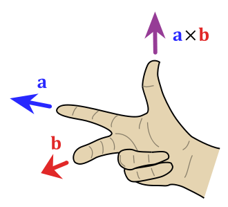

Ders 2
Çoğunlukla özvektör kavramına atıf yapıldığında söylenmek istenen ($C$ kompleks sayıların kümesi olsun),
$$ Av = \lambda v, \qquad \lambda \in C $$
ifadesidir, yani "sağ özvektör", yani bir matrisi sağdan çarpınca boyu büyüyen ya da küçülen vektör. Sol özvektörler de mümkün, bu durumda,
$$ v^TA = \lambda v^T, \qquad \lambda \in C $$
$A$'nin spektrumu $\sigma(A)$ o matrisin tüm özvektörlerinin kümesidir. Numpy ile
import numpy.linalg as lin
A = [[3,4,3],[5,5,6],[5,5,5]]
A = np.array(A)
[V,D] = lin.eig(A)
print 'ozvektorler'
print D
print 'ozdegerler'
print V
ozvektorler
[[-0.41963784+0.j 0.72738656+0.j 0.72738656-0.j ]
[-0.66394149+0.j -0.42567121+0.33744486j -0.42567121-0.33744486j]
[-0.61893924+0.j -0.25117492-0.33579002j -0.25117492+0.33579002j]]
ozdegerler
[ 13.75351937+0.j -0.37675969+0.47073926j -0.37675969-0.47073926j]
Eğer $B = PAP^{-1}$, ki $P$ eşsiz olmayacak şekilde, o zaman $\sigma(B) = \sigma(A)$. İspatsız veriyoruz. Yani $P$ ve onun tersi ile bir matrisi iki taraftan çarpmak, o matrisin spektrumunu değiştirmiyor.
Eğer $\lambda \in C$ bir özdeğer ise, onun eşleniği (conjugate) $\bar{\lambda}$ da bir özdeğerdir. Bu sebeple reel matris $A$ için $\sigma{A} = \overline{\sigma{A}}$.
Bir reel matrisin tüm özdeğerlerinin reel olduğu "güzel" bir durum vardır; bu durum matrisin simetrik olduğu durumdur, yani $S^T = S$. Bu güzel durum aslında pratikte pek çok kez karşımıza çıkar; mesela kovaryans matrisleri olarak.
Simetrik matrisin özgün özdeğerlerine tekabül eden özvektörleri birbirine dikgendir. İspat, $v_i^T S v_j $ formülüne bakalım, ki $v_i,v_j$ özvektörler, $S$ simetrik matris.
Özdeğer eşitliğinden $S v_j = \lambda_j v_j$ kullanırsam,
$$ v_i^T S v_j = \lambda_j v_i^T v_j $$
Eğer $v_i^TS = \lambda_i v_i^T$ kullanırsam,
$$ v_i^T S v_j = \lambda_i v_i^T v_j $$
elde ederim. İkisini bir araya koyalım,
$$ \lambda_j v_i^T v_j = \lambda_i v_i^T v_j $$
$$ (\lambda_j-\lambda_i) v_i^T v_j = 0$$
Bu eşitliğin doğru olması sadece iki durumda olabilir; ya $\lambda_i,\lambda_j$ birbiriyle aynıdır, ya da birbirinden farklıdır ama o zaman $v_i,v_j$ birbirine dikgen olmalıdır.
[norm atlandı]
Eksi Bakışımlı Matrisler (Skew-symmetric Matrices)
Eğer $A^T = -A$ ise bu matrislere eksi bakışımlı deniyor [5]. Mesela
$$ \left[\begin{array}{rr} 0 & 2 \\ -2 & 0 \end{array}\right] $$
Bu matrisin devriği ve negatifi aynıdır. Eksi bakışımlı matrislerin köşegeni sıfır olmalıdır. Bu tür matrislerin ilginç bazı özellikleri var, mesela, hatırlarsak simetrik matrislerin pür reel spektrumu vardı. Eksi bakışımlı matrislerin spektrumu pür sanaldır (imaginary).
[köşegenleştirme atlandı]
Çapraz Çarpım (cross-product)
Noktasal çarpım bize bir skalar verir. İki vektör arasındaki çapraz çarpım bize başka bir vektör verir; $u,v \in \mathbb{R}^3$ olmak üzere çapraz çarpım,
$$ u \times v = \left[\begin{array}{r} u_2v_3 - u_3v_2 \\ u_3v_1 - u_1v_3 \\ u_1v_2 - u_2v_1 \end{array}\right] $$
Yani $\mathbb{R}^3$'teki iki vektör $u,v$'nin çapraz çarpımı alınabilir, ve $\mathbb{R}^3$'te yeni bir vektör elde ederiz. Bu yeni vektör $u,v$'ye dikgendir. Sağ el kuralı (alttaki resimde $u,v$ yerine $a,b$ kullanılmış)

Ayrıca çapraz çarpım simetriktir, $u \times v = - u \times v$.
Eksi Bakışımlı Matris (Skew-Symmetric Matrix)
Bilgisayar Görüşü (Computer Vision) alanında oldukça yaygın bir matris olan eksi bakışımlı bir matris alttadır, ve onu herhangi bir vektörden oluşturan şapka operatörüyle gösterelim, yani $u$ için $\hat{u}$ olsun,
$$ \hat{u} = \left[\begin{array}{rrr} 0 & -u_3 & u_2 \\ u_3 & 0 & -u_1 \\ -u_2 & u_1 & 0 \end{array}\right] \in \mathbb{R}^{3 \times 3} $$
Bu tür matrislerin kertesinin çift sayı olması şarttır.
$\hat{u}$'nun ilginç bir özelliği var, herhangi bir vektör $v$ ile
$$ \hat{u}v = u \times v $$
ki $\times$ bir çapraz çarpım. Yani, öncelikle, her vektörün bir eksi bakışımlı matris karşılığı var, ve üstteki operatör ile bu geçişi yapabiliriz, ayrıca ne zaman bir çapraz çarpım görsek, onu eksi bakışımlı matris çevirimi üzerinen bir normal matris çarpımı olarak temsil edebiliriz. Bu faydalı çünkü çapraz çarpımla uğraşmak biraz külfetli olabiliyor.
3 boyut bağlamında $\hat{u}$'nun kertesi tabii ki 2'dir; çünkü eksi bakışımlı matrislerinin kertesinin çift olması şart ise, ve 3 boyutlu durumda bu kerte en fazla 3 olabilir, ama 3 olamaz çünkü 3 çift sayı değil, o zaman 2 olur.
import numpy as np
def skew(a):
return np.array([[0,-a[2],a[1]],[a[2],0,-a[0]],[-a[1],a[0],0]])
A = np.array([[1,2,3]]).T
print skew(A)
[[ 0 -3 2]
[ 3 0 -1]
[-2 1 0]]
$A^3$
Diyelim ki $A$ bir $3 \times 3$ eksi bakışımlı matris, ve $a = (a_1,a_2,a_3)$ vektörü üzerinden oluşturulmuş. $A^3$ nedir?
$$A \cdot x = u \times x$$
olduğunu biliyoruz. O zaman
$$A^3 x = a \times ( a \times ( a \times x))$$
demektir. Eşitliğin sağ tarafına bakarsak, eğer $a=e$, ki $e$ bir birim vektörü olsun, yani $||e||=1$, o zaman norm'ların ilişkisi şu şekilde olurdu,
$$||e\times(e\times (e\times x)))\|=||e\times (e\times x))|| =||e\times x||$$
Neden?
$$ ||e \times x|| = ||e||||x|| \sin \theta = ||x|| \sin \theta$$
O zaman,
$$||e\times (e\times x))|| = ||e|||| e \times x|| \sin 90 = ||e \times x||$$
Böyle gider. Yani norm eşitlikleri doğru.
Eğer $a = ||a||e$ kabul edersek,
$$||a\times(a\times (a\times x)))|| = ||a||^3 ||e\times(e\times (e\times x)))||$$
$$ =\|a\|^3\|e\times x\| $$
$$ =\|a\|^2\|a\times x\| $$
$$ =(a^Ta)\|a\times x\| $$
Yani $A^3x = \pm (a^Ta) Ax$; eksi mi artı mı? Eksi işareti olduğunu sağ el kuralıyla görebiliriz. Demek ki $A^3 = -(a^Ta) \cdot A$.
Simetrik matrisler için
$$ A = UDU^T $$
olduğunu biliyoruz. Eksi bakışımlı matrisler için
$$ S = UBU^T $$
olur ki $B$ bir blok köşegen matristir, $U$ dikgen. $S$'in özdeğerleri pür sanaldır. Blok köşegen matris $diag(a_1Z,a_2Z,...,z_mZ,0,..0)$, ve $Z = \left[\begin{array}{cc} 0 & 1 \\ -1 & 0 \end{array}\right]$. Köşegende blok olması garip gelebilir, fakat tek sayılar yerine çapraz yönde birkaç sayının "üst üste" olduğu bir durum bu. Basit matris çarpımı ile kolay bir şekilde kontrol edilebilir ki
$Z^2 = -I, \qquad Z^3 = -Z, \qquad Z^4 = I$
Matris Üstelleri (Matrix Exponentials) [1, sf. 482]
$t \in \mathbb{R}$ ve bir kare matris $n \times n$ matrisi $A$ için, matris üsteli,
$$ U(t) = e^{tA} = \exp(tA) $$
alttaki problem için özgün bir $n \times n$ çözümüdür;
$$ \frac{dU}{dt} = AU, \qquad U(0) = I $$
Dikkat: matris üsteli $\exp$ fonksiyonun teker teker matris öğeleri üzerinde işletilmiş hali değildir.
Matris üstelleri bir seri olarak ta gösterilebilir,
$$ e^{tA} = \sum_{n=0}^{\infty} \frac{t^n}{n!} A^n = I + tA + \frac{t^2}{2}A^2 + \frac{t^3}{6}A^3 + ... $$
Bu seri yakınsayan (converging) bir seridir.
Örnek
$$ A = \left[\begin{array}{rrr} 0 & 1 \\ 0 & 0 \end{array}\right] $$
için
$$ e^{tA} = \left[\begin{array}{rrr} 1 & t \\ 0 & 1 \end{array}\right] $$
Örnek
$$ A = \left[\begin{array}{rrr} 1 & 0 \\ 0 & 1 \end{array}\right] $$
için
$$ e^{tA} = \left[\begin{array}{rrr} e^t & 0 \\ 0 & e^t \end{array}\right] $$
Teori
Eğer $A$ bir eksi bakışımlı matris ise, $Q(t) = e^{tA}$ muntazam (proper) bir dikgen matristir.
İspat
Dikgenlik tersi ile devriğin aynı olması demektir, o zaman üstteki eşitlikte sol tarafın tersi, sağ tarafın devriği aynı olmalı, yani $Q(t)^{-1}$ ile $e^{tA^T}$.
$$ Q(t)^{-1} = e^{-tA} = e^{tA^T} = (e^{tA})^T = Q(t)^T $$
Hakikaten de öyle.
Not: Bir diğer ispata göre tüm dikgen matrisler bir eksi bakışımlı matrisin $e$'nin üsteli alınarak oluşturulabilir. Buradaki nüansa dikkat, tüm eksi bakışımlı matrislerin üsteli dikgendir demek ile tüm dikgen matrisler eksi bakışımlı matrislerin üsteli alınmış halidir demek farklı.
Üstteki kavramları kullanarak dönüş (rotation) yapmayı sağlayan Rodriguez formülü [6]'da bulunabilir.
SVD
Bu işlemin özdeğer / özvektör hesabının karesel olmayan matrisler durumundaki genelleştirilmiş hali olduğu düşünülebilir. Pek çok lineer cebir işlemi, mesela tersini alma, kerte hesabı, vs. SVD bağlamında incelenebilir. Genelleştirme dedik, eğer $A$ karesel değilse özvektörleri hesaplayamayız, ama $A^TA$ kareseldir, ve bu matrisin özvektörleri $A$'nin SVD'si ile yakından alakalıdır.
[İspat atlandı]
Geometrik olarak $A = U \Sigma V^T$ ile gösterilen SVD'nin bir $x \in \mathbb{R}^n$'yi $A$ uzerinden transform ettiğimiz durumda, $y = Ax$ diyelim, $y$'nin $U$'da bazındaki kordinatlarının $V$ bazındaki kordinatları ile bir ilişki ortaya çıkarttığını söyleyebiliriz; bu ilişki $\Sigma$'nin öğeleri üzerinden bir ölçeklemeden ibarettir. Yani
$$ y = Ax = U\Sigma V^Tx \quad \Leftrightarrow \quad U^Ty = \Sigma V^T x $$
[birim küre ellipsoid eşlemesi atlandı]
Genelleştirilmiş Ters (Generalized -Moore Penrose- Inverse)
Lineer sistem çözerken $Ax = b$ için eğer $A$'nin tersi alınabiliyorsa, çözüm kolay, $x^\ast = A^{-1}b$. Fakat $A$'nin tersi alınamıyorsa, ki bu $A$ karesel olmadığında otomatik olarak doğru olacaktır, ne yapacağız? Genelleştirilmiş tersi alma, ya da sözde ters (pseudoinverse) işlemi burada ise yarar. Sözde ters için, her $A$ için bir SVD olduğuna göre, $A = U \Sigma V^T$, ve $\Sigma$'nın sıfır olmayan eşsiz değerlerinin tersi alınır (yani öğe $\sigma_i$, $1/\sigma_i$ olur), sıfır değerlerine dokunulmaz, bu sonuçlar yeni bir $\Sigma^{\dagger}$'in köşegenine dizilir, "sözde ters" bu matris olur,
$$ \Sigma^{\dagger} = \left[\begin{array}{cc} \Sigma_1^{-1} & 0 \\ 0 & 0 \end{array}\right]$$
Ve bu ters işlemi tüm $A$'nin tersini almak için kullanılır, ki bu sözde tersi de boyutu $n \times m$ olan bir $A^{\dagger}$ ile gösteriyoruz (İngilizce "$A$-dagger" olarak telafuz ediliyor, biz "$A$-kama" diyelim),
$$
A^{\dagger} = V \Sigma^{\dagger} U^T
\qquad (1)
$$
Bu noktaya nasıl geldiğimize dikkat, eğer SVD sonucunun pür tersini alabilseydik,
$$ A^{-1} = V^{-T}\Sigma^{-1}U^{-1} $$
Dikgen matrisler için $Q^{-1}=Q^T$ olduğu için
$$ = V\Sigma^{-1}U^{T} $$
$\Sigma^{-1}$ olmadığı için yerine $\Sigma^{\dagger}$ kullanıyoruz ve (1)'e erişiyoruz.
Bazı özellikler,
$$ A A^{\dagger} A = A $$
ya da
$$ A^{\dagger} A A^{\dagger} = A^{\dagger} $$
Peki sözde tersi alma işlemini denklem sistemi çözmekte nasıl kullanırız?
Lineer sistem çözümü bağlamında durumunda 3 türlü sonuç olabileceğini görmüştük. Eğer sonsuz tane çözüm varsa, bu büyük bir ihtimalle problemin tam kısıtlanmamış (constrained) olması ile alakalıdır. Tabii hiçbir çözüm olmayabilir, ve size para veren kişi sizden hala çözüm beklemektedir (!), bu durumda $Ax=b$'yi çözmek yerine ona en yakın olabilecek şeyi çözebiliriz, yani $|Ax - b|^2$'yi minimize etmeyi seçebiliriz, $Ax$'i $b$'yi mümkün olduğu kadar yaklaştırırız. Burada sözde ters ise yarar, çünkü $x^\ast = A^{\dagger}b$ ile hesaplanan çözüm aynı zamanda $|Ax - b|^2$'yi minimize eder! Bu çözüm En Az Kareler (Least Squares) çözümü olarak ta bilinir, tabii burada sistem aşırı belirtilmiş (overdetermined) değil, eksik belirtilmiş (underdetermined) durumda. Not: Ayrıca sözde ters ile bulunan $x^\ast$'in mümkün tüm çözümler arasında "norm'ü en az olan $x^\ast$'i bulduğu da" söylenir.
Eğer çözüm özgün ise, sözde ters yine işler, özgün çözümü bulur. Yani her halükarda sözde ters tüm problemlerimizi çözer.
Lineer cebir'i böylece gözden geçirmiş olduk. Artık dersimizin ana konularına başlayabiliriz.
Hareketli bir Sahneyi Temsil Etmek
Burada sahne dış dünya, yani kamera ile hareket ederken gördüğümüz şeyler.
Hareket ederken kamera pek çok resim alabilir, tabii bu dersimiz uzun zamandır yapılan araştırmalara dayanıyor, ve bu araştırmalar çoğunlukla iki resim durumuna odaklandılar; fakat günümüzde bir kamera saniyede mesela 30 tane resim çekebilir, bu durum için gerekli matematiği de göreceğiz. Önce iki resimle başlayacağız, ve bu matematiğin daha genel, çok resimli haline de kendimizi hazırlayacağız.
3D'de Yeniden Oluşturmak (3D Reconstruction)
Durağan olduğu kabul edilen 3D dış dünyayı pek çok açıdan ama iki boyutlu resmi ile tekrar oluşturma çabasının bilimde uzun bir tarihi var. Bu problem klasik bir "kötü konumlanmış (ill-posed)" problemdir, çünkü yeniden oluşturulan sonuç tipik olarak özgün değildir (pek çok farklı yeniden oluşturma mümkündür). Bu yüzden ek bazı kısıtlamalar getirmek gerekir. Bu alanda hala yapılacak çok iş olduğunu belirtmek isterim, yani bilim dalımız oldukça bakir [araştırmacılar, atlayın].
Dış dünyanın gördüğümüz imajdaki nasıl oluştuğunu perspektif izdüşümü (perspective projection) üzerinden modelleyeceğiz, bu modelleme kamera modeli olarak iğne deliği kamera (pinhole camera) modelini kullanır. Bu modeli şöyle hayal etmek mümkün, karanlık bir odadayız, duvarda tek bir delik var, ve bu oda dışındaki tüm görüntüler bu delik üzerinden odaya giriyor. Perspektif izdüşüm ilk kez Öklit tarafından, I.O. 400 yılında araştırıldı; bu hakikaten çok ilginç, yani sonuçta bugün bilgisayarlar ile araştırdığımız bu konunun temelindeki bazı kavramların ne kadar önceden beri bilindiği şaşırtıcı olabiliyor.
Ardından bu konu Rönesans sırasında çok yoğun araştırıldı, bu zamanlarda yapılan resimlerdeki derinliği temsil etme çabaları bugüne kalan eserlerden hepimiz biliyoruz. Sanatçılar, bilimciler iki boyut üzerinde derinliği, üç boyutluluğu gösterebilmek için kafa yordular, ve perspektif izdüşümün araştırılması 17. ve 18. yüzyılda perspektif geometrisi adında bir yeni alana dönüştü.
Çoklu Bakış Açıdan Tekrar Oluşturma (Multiview Reconstruction) alanında yapılan ilk araştırma oldukça eskiye gidiyor, ki bu da şaşırtıcı. Kruppa bu konuyu 1913'te araştırdı, iki farklı kameranın aynı objeye dönük iki resmine odaklandı, kendine şu soruyu sordu, "bu iki resimde en az kaç tane noktaya bakmalıyım ki 3 boyutta bir model oluşturabileyim". Kruppa gösterdi ki en az 5 nokta sonlu miktarda çözüm bulmak için yeterli, ki kameranın hareketi de buna dahil. Tabii bulunan özgün tek çözüm değildir, ama daha önce söylediğimiz gibi bu problem kötü konumlanmış bir problemdir, ama en azından çözüm sonsuz tane değil, sonlu sayıda.
İki görüntüden hareket ve yapıyı çıkartabilen ilk lineer algoritma Lonquet-Higgins tarafından 1981'de bulundu, bu algoritma eş kutupsal kısıtlama (epipolar constraint) kullanarak bu işi becerdi. Bu derste eş kutupsal kısıtlama konusunu öğreneceğiz. Bu buluş pek çok takip eden diğer buluşa ilham verdi, 80 ve 90'li yıllarda ek buluşlar yapıldı. Ardından alanımızın klasik kitaplarından Zisserman ve arkadaşlarının yazdığı Çoklu Bakış Açı Geometrisi (Multiple View Geometry) adlı kitap var, ve iş giderek bizim bu derste kullandığımız en güncel olan kitaba geliyor, An Invitation to 3D Vision.
Derste işlediğimiz konu farklı isimlerde ortaya çıkabiliyor, hareketten yapı çıkartmak (structure from motion) ismini gördük, bir diğer isim görsel (visual) SLAM, ki SLAM kısaltması "aynı anda yer belirlemek ve haritalamak (simultaneous localization and mapping)" kelimelerinden geliyor. Robotik alanındakiler bu kelimeyi çok kullanırlar, bir robotun dış dünyada hem etrafını haritalaması, hem de aynı anda o harita içindeki yerini kestirebilmesi, hesaplaması bu alanın baş problemlerinden. Tabii görsel SLAM bunu görsel olarak yapabilmek; çünkü çok farklı şekillerde SLAM yapılabiliyor, mesela 1. ders başında söylediğimiz gibi lazer algılayıcılarla SLAM yapılabilir, hatta sonar algılayıcılarla bile, ya da tüm bunları bir algılayıcı füzyonu (sensor fusion) üzerinden birleştirerek.
Kaynaklar
[1] Olver, Applied Linear Algebra
[2] Bayramlı, Lineer Cebir, Ders 15
[3] Sastry, An Invitation to 3-D Vision
[4] Zissermann, Multiple View Geometry
[5] Bayramlı, Lineer Cebir, Ders 5
[6] Bayramlı, Fizik - Döndürme (Rotation)
Yukarı